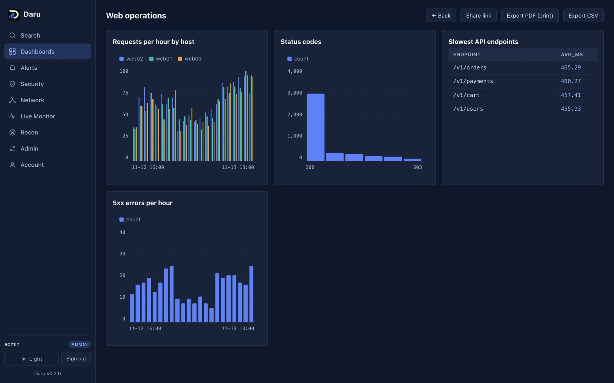
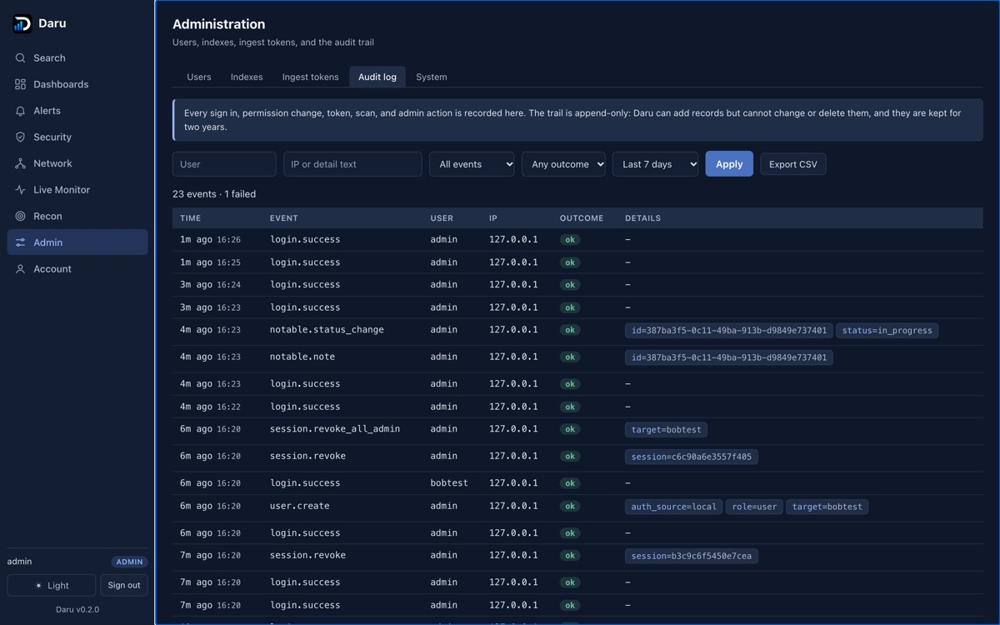
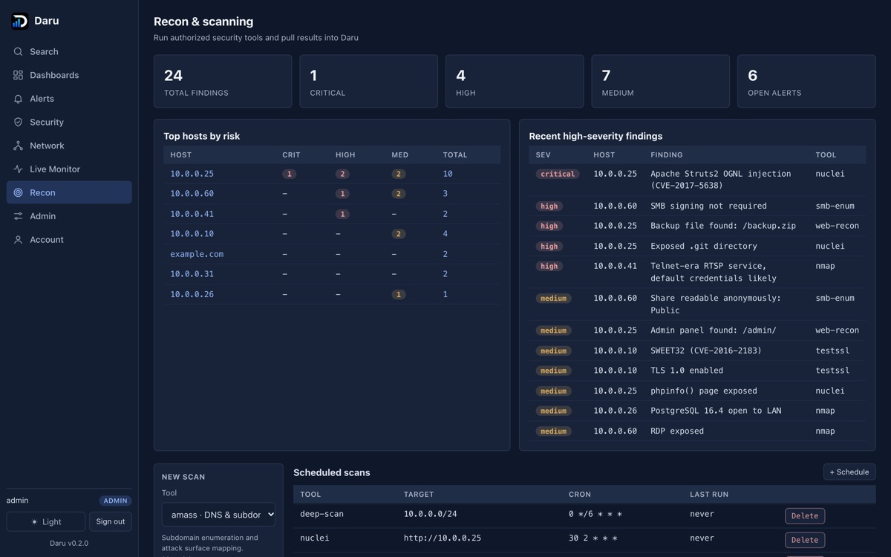

Daru: Your Logs, Your Hardware, Your SIEM
An open-source, self-hosted log analytics and SIEM platform in a single Go binary plus ClickHouse. Search, dashboards, alerts, incident triage, syslog, an append-only audit trail, and live packet capture, with no API keys, no cloud, and no per-GB licensing.

What You Will Learn / Do
- Run a SIEM on your own hardware with one install command, or with Docker Compose.
- Send logs over Splunk HEC, raw HTTP, JSON, or syslog, then search them with a pipe query language.
- Build dashboards and scheduled alerts, triage incidents mapped to MITRE ATT&CK, and review an append-only audit trail.
- Stack: Go 1.27, ClickHouse, vanilla JavaScript, tshark and tcpdump · License: MIT
Overview
Daru is a self-hosted alternative to commercial SIEM products for teams that want Splunk-style search without the bill, the cloud dependency, or API keys. One Go binary holds the search API, ingest endpoints, alert scheduler, and web UI. The only other piece is ClickHouse, the column store that keeps every event.
Logs arrive over the Splunk HTTP Event Collector format (so existing forwarders work unchanged), raw text, JSON, or syslog over UDP and TCP. Fields are extracted automatically from key=value pairs and JSON. A query such as index=web status>=500 | stats count by host is parsed and compiled to ClickHouse SQL, and results come back as event lists, tables, or charts.
On top of search sit the pieces a security team needs day to day: dashboards, cron-scheduled alerts with signed webhooks, a notable-event queue with notes and assignment, per-index access control and retention, and sign in through local accounts with TOTP, LDAP or Active Directory, OIDC, or SAML 2.0.
Architecture Overview
- Ingest: HEC, raw, and JSON over HTTP, plus RFC 5424 and RFC 3164 syslog over UDP and TCP. Every path shares one events-per-second rate limit, and each ingest token is bound to one index.
- Query engine: a parser for the pipe language (
search,where,eval,stats,timechart,top,rex,spath,dedup, and more) and a compiler to ClickHouse SQL. User searches run with ClickHousereadonly=2. - Storage: ClickHouse tables for events, users, sessions, dashboards, alerts, incidents, scans, and the audit trail. Privileges are split: Daru runs as a least-privilege app user, and a separate admin user handles schema changes and retention.
- Web UI: a dependency-free single-page app embedded in the binary, served under a strict Content Security Policy.
- Recon and Live Monitor: 59 authorized security tools run as argument lists (never a shell), and live packet capture through tcpdump and tshark without running Daru as root.
Quick Start
Option 1: One command (Linux, macOS, Raspberry Pi, Termux)
git clone https://github.com/TYFSADIK/daru && cd daru && ./install.shThe installer builds Daru, starts ClickHouse with Docker when available, writes generated passwords to ~/.daru/daru.env, and prints the admin login. Add --with-tools to also install the scanners.
Option 2: Docker Compose
cd deploy && export CLICKHOUSE_PASSWORD=$(openssl rand -hex 16) CLICKHOUSE_APP_PASSWORD=$(openssl rand -hex 16) DARU_ADMIN_PASSWORD=$(openssl rand -hex 16) && docker compose up -dOpen http://localhost:8088 and sign in as admin.
Key Features
- Search and dashboards: a pipe query language compiled to ClickHouse SQL, charts with real axes, saved searches, and dashboards with share links and PDF and CSV export.
- Alerts and incidents: cron-scheduled searches that open notable events, HMAC-SHA256 signed webhooks, and an incident view with a timeline of analyst notes, status changes, and assignment, mapped to MITRE ATT&CK tactics.
- Audit trail: every sign in and failed attempt, permission change, token, scan, and admin action is stored with user, IP, and outcome. The ClickHouse app user cannot change or delete it, and records are kept for two years.
- Identity: Argon2id passwords, TOTP, LDAP and Active Directory, OIDC with PKCE, SAML 2.0, roles, per-index access control, and a sessions page where users and admins can sign out any device.
- Syslog receiver: RFC 5424 and 3164, UDP and TCP with octet-counted framing, a sender allowlist, connection caps, and protection against devices whose clocks run ahead.
- Live Monitor: a Wireshark-style capture table with a Host / SNI column, live packets per second, pause and filter, per-packet details, and a
.pcapdownload. - Network and recon: LAN discovery, per-device intelligence, a posture overview, scheduled scans, and 59 tools behind an authorization gate and a scope guard.
Screenshots
All screenshots use made-up demo data.






Security Design
- Least privilege in the database: the app user has only
SELECT,INSERT, and row-level delete and update, revoked entirely on the audit table. A CI job proves each grant and each denial against a real ClickHouse. - Strict browser policy:
script-src 'self'andstyle-src 'self'with no inline exceptions, CSRF tokens on every write, and HttpOnly session cookies. - No shell, ever: every recon tool and capture process runs as an argument list from a vetted path. When Daru runs as root, it executes only root-owned binaries.
- Private files: packet captures are written mode 0600 in a 0700 folder, are downloadable only by their owner or an admin, and are deleted after 30 minutes.
Testing & Validation
After install, confirm the server and the database are both healthy:
curl -s -o /dev/null -w "%{http_code}\n" http://localhost:8088/readyYou should see 200. Then send a test event with an ingest token from Admin > Ingest tokens and search for it:
curl http://localhost:8088/services/collector -H "Authorization: Splunk YOUR_TOKEN" -d '{"event":"user=alice action=login status=200"}'Every change to the project runs the same checks in CI: unit tests, store integration tests against ClickHouse, golangci-lint, gosec, govulncheck, a Docker build, and cross builds for Linux, macOS, Windows, and Android.
Troubleshooting
- A search returns nothing: check the time range, and that the index exists under Admin > Indexes. Creating an ingest token creates its index.
- Packet capture fails: run
sh scripts/grant-capabilities.shonce so tcpdump can capture without running Daru as root. - Syslog arrives from nowhere: set
DARU_SYSLOG_ALLOWto the networks that may send logs. - Upgrading an existing install: run the
REVOKEline indeploy/clickhouse-users.sqlonce so the audit trail becomes append-only.
Key Results
- Delivered a complete SIEM as one Go binary plus ClickHouse, with no API keys and no telemetry.
- Brought 59 authorized security tools behind one interface, with an authorization gate and scope guard on every scan.
- Made the audit trail append-only at the database level and proved it in CI.
- Measured every UI color against WCAG AA and fixed the ones that failed, as low as 3.2:1 before.
- Kept CI green across tests, lint, security scanning, and seven target platforms.
How I built it
I wrote Daru in Go for a single static binary that runs anywhere, and chose ClickHouse because it scans billions of log rows quickly on modest hardware. The query language is a hand-written parser and compiler, so every search becomes one ClickHouse query with the user's index permissions built in.
The UI is plain JavaScript embedded in the binary. Keeping it dependency-free let me run it under a strict Content Security Policy, which in turn shaped details such as setting styles through the CSSOM rather than inline attributes.
I treated security features as testable claims. The append-only audit trail is a database grant that CI checks; session revocation, syslog allowlisting, and capture download permissions were each tested end to end against a running instance.
Limitations and Future Work
- Daru has no indexer acknowledgement endpoint, so Splunk forwarders that require ack must use HEC without ack, or raw ingest.
- Wi-Fi details in Live Monitor (SSID, signal, link rate) are available on Linux only.
- Next: email and Slack alert actions, a password policy with lockout, built-in detection rules, and an option to require two-factor for every account.
References
- Daru repository, source, install scripts, and documentation.
- ClickHouse documentation, the storage engine behind every search.
- RFC 5424 and RFC 3164, the syslog formats Daru receives.
- MITRE ATT&CK, the tactic mapping used for notable events.
- Wireshark and tshark documentation, the decoder behind Live Monitor.
Cite This Page
Citation formats
Plain text
Taki Sadik, "Daru: Your Logs, Your Hardware, Your SIEM", TYFSADIK, https://tyfsadik.org/work/infrastructure/daru.html (accessed 2026-11-13).BibTeX
@misc{sadik-daru,
author = {Sadik, MD. Taki Yasir Faraji},
title = {Daru: Your Logs, Your Hardware, Your SIEM},
year = {2026},
url = {https://tyfsadik.org/work/infrastructure/daru.html},
urldate = {2026-11-13}
}APA
Sadik, M. T. Y. F. (2026). Daru: Your Logs, Your Hardware, Your SIEM. TYFSADIK. https://tyfsadik.org/work/infrastructure/daru.html